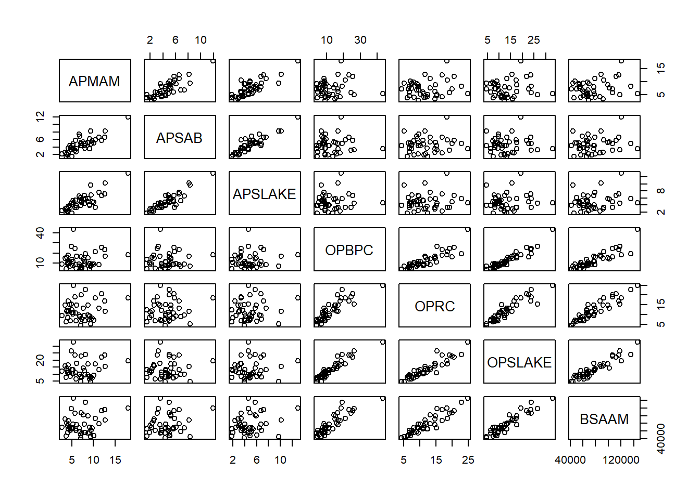

knitr::opts_chunk$set(echo = TRUE, warning=FALSE, message=FALSE)
library(tidyverse)
library(ggplot2)
library(dplyr)
library(stringr)
library(alr4)
library(smss)
library(stargazer)Error in library(stargazer): there is no package called 'stargazer'knitr::opts_chunk$set(echo = TRUE, warning=FALSE, message=FALSE)
library(tidyverse)
library(ggplot2)
library(dplyr)
library(stringr)
library(alr4)
library(smss)
library(stargazer)Error in library(stargazer): there is no package called 'stargazer'The predictor is ppgdp, and the response variable is fertility. ## 1.1.2
data(list="UN11")
plot(x=UN11$ppgdp, y=UN11$fertility)
A straight line function would not be a good model for this graph. It appears that ppgdp has the biggest impact on fertility towards the left side of the graph (closer to x=0). In other words, ppgd has the biggest impact on fertility in lower ppgdp values and then does not change as drastically as ppgdp gets even larger (right side of the graph). ## 1.1.3
plot(x=log(UN11$ppgdp), y=log(UN11$fertility))
A logarithmic function makes a lot more sense for this data frame in order to apply a linear regression model. When both variables are logged, the data appears more linear and has a negative trend.
I created an example data frame to explore this question. According to the output of the lm() function, the slopes are different (the one multiplied by 1.33 has a greater slope). The plots appear to have the same slope, however the y scale is different which likely explains why the lm() function gives different slopes.
dfexample<-data.frame(col1=c(2004, 2005, 2006, 2007, 2008, 2009, 2010),
col2=c(50000, 56000, 70000, 68000, 58000, 72000, 80000),
col3=col2*1.33)Error in data.frame(col1 = c(2004, 2005, 2006, 2007, 2008, 2009, 2010), : object 'col2' not founddfexampleError in eval(expr, envir, enclos): object 'dfexample' not foundlm(col2~ col1, data=dfexample)Error in is.data.frame(data): object 'dfexample' not foundlm(col3~ col1, data=dfexample)Error in is.data.frame(data): object 'dfexample' not foundfit2<-lm(col2~ col1, data=dfexample)Error in is.data.frame(data): object 'dfexample' not foundfit3<-lm(col3~ col1, data=dfexample)Error in is.data.frame(data): object 'dfexample' not foundsummary(fit2)Error in summary(fit2): object 'fit2' not foundsummary(fit3)Error in summary(fit3): object 'fit3' not foundplot(x=dfexample$col1, y=dfexample$col2)Error in plot(x = dfexample$col1, y = dfexample$col2): object 'dfexample' not foundplot(x=dfexample$col1, y=dfexample$col3)Error in plot(x = dfexample$col1, y = dfexample$col3): object 'dfexample' not foundThe correlation (adjusted R squared) is the same for both models. See above.
data(list="water")
pairs(water[2:8])
I don’t know if I am interpreting this correctly but using this matrix we can see which site correlates most closely with stream runoff (BSAAM). Using this matrix, we see there is a strong correlation between OPSLAKE, OPRC and OPBPC site precipitation and runoff. Perhaps precipitation measured at these sites could predict runoff. Moving forward, I might fit a models using those three sites to predict runoff at the site near bishop and figure out which model creates the best prediction (has the highest F statistic).
data(list="Rateprof")
pairs(Rateprof[8:12])
There is a strong positive correlation between quality and helpfulness, quality and clarity, and clarity and helpfulness. In other words, professors that rate high in one of these areas are likely to rate high in the others. easiness is less strongy correlated with quality, helpfulness and clarity, but there is still a positive relationship (i.e. professors with “easy” courses are more likely to rate higher in other categories but this trend is less strong). Finally, raterInterest does not predict the other ratings very well. Easiness does not appears to have much of a correlation with rater interest. There is a positive relationship between rater interest and quality, helpfulness, and clarity, but again it is not a strong relationship.
##5a
data(list="student.survey")
ggplot(student.survey, aes(x=re, y=pi)) +geom_point()
ggplot(student.survey, aes(x= tv, y=hi))+geom_point()+geom_smooth(method="lm")
Political Affiliation and Religiosity: This graph is not super useful given there are multiple observations contained in each point on the graph but even so, it appears that more frequently attending religious services correlates with more conservative political ideology.
TV and GPA: There appears to be a negative correlation between time spent watching tv and high school gpa.
##5b
student.survey subj ge ag hi co dh dr tv sp ne ah ve pa pi
1 1 m 32 2.2 3.5 0 5.00 3.0 5 0 0 FALSE r conservative
2 2 f 23 2.1 3.5 1200 0.30 15.0 7 5 6 FALSE d liberal
3 3 f 27 3.3 3.0 1300 1.50 0.0 4 3 0 FALSE d liberal
4 4 f 35 3.5 3.2 1500 8.00 5.0 5 6 3 FALSE i moderate
5 5 m 23 3.1 3.5 1600 10.00 6.0 6 3 0 FALSE i very liberal
6 6 m 39 3.5 3.5 350 3.00 4.0 5 7 0 FALSE d liberal
7 7 m 24 3.6 3.7 0 0.20 5.0 12 4 2 FALSE i liberal
8 8 f 31 3.0 3.0 5000 1.50 5.0 3 3 1 FALSE i liberal
9 9 m 34 3.0 3.0 5000 2.00 7.0 5 3 0 FALSE i very liberal
10 10 m 28 4.0 3.1 900 2.00 1.0 1 2 1 FALSE i slightly liberal
11 11 m 23 2.3 2.6 253 1.50 10.0 15 1 1 FALSE r slightly conservative
12 12 f 27 3.5 3.6 190 3.00 14.0 3 7 0 FALSE d liberal
13 13 m 36 3.3 3.5 245 1.50 6.0 15 12 5 FALSE d very liberal
14 14 m 28 3.2 3.2 500 6.00 3.0 10 1 2 FALSE i moderate
15 15 f 28 3.0 3.5 3500 1.00 4.0 3 1 0 FALSE d very liberal
16 16 f 25 3.8 3.3 210 10.00 7.0 6 1 0 FALSE i liberal
17 17 f 41 4.0 3.0 1000 15.00 6.0 7 3 10 FALSE i slightly liberal
18 18 m 50 3.8 3.8 0 3.00 5.0 9 6 10 FALSE d liberal
19 19 m 71 4.0 3.5 5000 3.00 6.0 12 2 2 FALSE i liberal
20 20 f 28 3.0 3.8 120 1.00 25.0 0 0 2 FALSE d very liberal
21 21 f 26 3.7 3.7 8000 8.00 4.0 4 4 1 FALSE i moderate
22 22 f 27 4.0 3.7 2 2.50 4.0 2 7 0 FALSE i liberal
23 23 m 31 2.7 3.5 1700 5.00 7.0 7 2 0 FALSE r very conservative
24 24 f 23 3.7 3.7 2 2.00 7.0 4 2 0 FALSE i moderate
25 25 m 23 3.2 3.8 450 4.00 0.0 7 7 3 FALSE i very liberal
26 26 f 44 3.0 3.0 0 2.00 2.0 3 2 3 FALSE i slightly liberal
27 27 m 26 3.7 3.0 1000 3.00 8.0 2 7 0 FALSE d liberal
28 28 f 31 3.7 3.8 850 10.00 10.0 3 7 0 FALSE r slightly conservative
29 29 m 24 3.3 3.1 420 2.00 10.0 6 5 0 FALSE d moderate
30 30 f 26 3.3 3.3 1200 0.75 10.0 0 3 0 FALSE r liberal
31 31 m 26 3.3 3.5 1000 1.50 0.0 3 3 3 FALSE d liberal
32 32 f 32 3.5 3.9 150 12.00 10.0 2 0 0 FALSE d liberal
33 33 m 26 3.4 3.4 2000 1.50 2.0 7 14 0 FALSE d liberal
34 34 f 22 3.2 2.8 316 2.00 10.0 3 5 2 FALSE i liberal
35 35 f 24 3.5 3.9 900 1.75 8.0 0 0 1 FALSE d very liberal
36 36 m 24 3.6 3.3 250 2.00 4.0 6 3 1 FALSE r slightly conservative
37 37 m 23 3.8 3.7 180 0.50 10.0 5 7 0 FALSE i liberal
38 38 m 33 3.4 3.4 6000 1.50 8.0 5 6 2 FALSE i liberal
39 39 m 23 2.8 3.2 950 2.00 37.0 10 5 0 FALSE r slightly conservative
40 40 m 31 3.8 3.5 1100 0.75 0.5 3 5 2 FALSE r conservative
41 41 m 26 3.4 3.4 1300 1.20 0.0 8 2 0 FALSE i liberal
42 42 m 28 2.0 3.0 360 0.25 10.0 8 3 0 FALSE d slightly liberal
43 43 f 24 3.8 3.9 1800 2.00 2.0 5 4 1 FALSE r conservative
44 44 m 23 3.0 3.6 900 15.00 12.0 0 5 0 FALSE r slightly conservative
45 45 f 25 3.0 4.0 5000 5.00 1.5 0 4 0 FALSE i moderate
46 46 f 24 3.0 3.5 300 1.00 10.0 5 5 0 FALSE d liberal
47 47 f 27 3.0 3.8 2000 20.00 28.0 7 14 2 FALSE r slightly liberal
48 48 m 24 3.3 3.8 630 1.30 2.0 3 5 0 FALSE r very conservative
49 49 f 26 3.8 4.0 1200 1.00 0.0 4 3 1 FALSE d liberal
50 50 f 27 3.0 4.0 580 2.00 5.0 15 1 2 FALSE d very liberal
51 51 m 32 3.0 3.0 2000 5.00 5.0 5 2 1 FALSE r slightly conservative
52 52 f 41 4.0 4.0 0 8.00 8.0 4 2 2 FALSE r moderate
53 53 f 29 3.0 3.9 300 3.70 2.0 5 1 11 FALSE d liberal
54 54 f 50 3.5 3.8 6 6.00 7.0 3 7 0 FALSE d liberal
55 55 f 22 3.4 3.7 80 7.00 10.0 1 2 2 FALSE i liberal
56 56 f 23 3.6 3.2 375 1.50 5.0 10 5 0 FALSE r conservative
57 57 m 26 3.5 3.6 2000 0.30 16.0 8 3 0 FALSE d moderate
58 58 m 30 3.0 3.0 1 1.10 1.0 4 3 0 FALSE i slightly liberal
59 59 f 23 3.0 3.0 112 0.50 15.0 3 3 0 FALSE i moderate
60 60 f 22 3.4 3.0 650 4.00 8.0 16 7 1 FALSE i moderate
re ab aa ld
1 most weeks FALSE FALSE FALSE
2 occasionally FALSE FALSE NA
3 most weeks FALSE FALSE NA
4 occasionally FALSE FALSE FALSE
5 never FALSE FALSE FALSE
6 occasionally FALSE FALSE NA
7 occasionally FALSE FALSE FALSE
8 occasionally FALSE FALSE FALSE
9 occasionally FALSE FALSE NA
10 never FALSE FALSE FALSE
11 occasionally FALSE FALSE FALSE
12 occasionally FALSE FALSE NA
13 occasionally FALSE FALSE FALSE
14 occasionally FALSE FALSE FALSE
15 never FALSE FALSE FALSE
16 every week FALSE FALSE FALSE
17 every week FALSE NA FALSE
18 never FALSE FALSE FALSE
19 never FALSE FALSE FALSE
20 occasionally FALSE FALSE FALSE
21 occasionally FALSE FALSE FALSE
22 occasionally FALSE FALSE FALSE
23 every week FALSE FALSE FALSE
24 never FALSE FALSE FALSE
25 never FALSE FALSE FALSE
26 most weeks FALSE FALSE FALSE
27 occasionally FALSE FALSE NA
28 most weeks FALSE FALSE FALSE
29 occasionally FALSE FALSE NA
30 occasionally FALSE FALSE NA
31 occasionally FALSE FALSE FALSE
32 occasionally FALSE FALSE FALSE
33 never FALSE FALSE FALSE
34 occasionally FALSE FALSE NA
35 occasionally FALSE FALSE NA
36 every week FALSE FALSE FALSE
37 never FALSE FALSE NA
38 never FALSE FALSE FALSE
39 most weeks FALSE FALSE FALSE
40 most weeks FALSE FALSE NA
41 occasionally FALSE FALSE FALSE
42 never FALSE FALSE NA
43 every week FALSE FALSE FALSE
44 never FALSE FALSE FALSE
45 occasionally FALSE FALSE FALSE
46 never FALSE FALSE FALSE
47 occasionally FALSE FALSE FALSE
48 every week FALSE FALSE FALSE
49 never FALSE FALSE FALSE
50 occasionally FALSE FALSE FALSE
51 every week FALSE FALSE FALSE
52 occasionally FALSE FALSE FALSE
53 occasionally FALSE FALSE FALSE
54 occasionally FALSE FALSE NA
55 never FALSE FALSE NA
56 every week FALSE FALSE FALSE
57 occasionally FALSE FALSE NA
58 every week FALSE FALSE FALSE
59 most weeks FALSE FALSE FALSE
60 occasionally FALSE FALSE FALSElm(pi ~ re, data=student.survey)
Call:
lm(formula = pi ~ re, data = student.survey)
Coefficients:
(Intercept) re.L re.Q re.C
3.5253 2.1864 0.1049 -0.6958 lm(formula= hi ~ tv, data=student.survey)
Call:
lm(formula = hi ~ tv, data = student.survey)
Coefficients:
(Intercept) tv
3.44135 -0.01831 Political Affiliation and Religiosity: I have no idea what re.Q re.L and re.C is. Both categorical variables take on more than three possible values so I am guessing I have the wrong code.
TV and GPA: For every +1 hr spend watching tv per week, gpa decreases by 0.018. For a student that watches no tv in the week, their predicted gpa is 3.44.